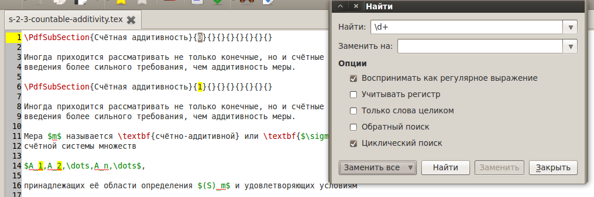

[Назад: 2.1. Редактирование]
[Далее: 2.3. Режим блоков]
Поиск
Чтобы открыть диалог поиска и замены текста, выберите соответствующий пункт в меню Правка, или нажмите
соответствующую кнопку на панели инструментов:

либо воспользуйтесь сочетанием клавиш Ctrl+F.
Окно поиска и замены выглядит следующим образом:

Введите текст, который хотите найти, в поле Искать и нажмите кнопку Найти. Если введенный образец текста
будет найден, то он будет автоматически выделен в документе и курсор перейдет к этому месту в документе. Все места в
документе, где был найден данный текст, будут подсвечены. При повторном нажатии кнопки Найти будет выделено
следующее вхождение текста в документ (конечно, если оно имеется).
После закрытия окна поиска по прежнему можно искать следующее вхождение текста, введенное равнее в поле Искать.
Для этого можно выбрать пункт Найти следующее в меню Правка, либо нажать соответствующую кнопку на панели
инструментов:

либо воспользоваться сочетанием клавиш Ctrl+G.
Последние 20 образцов, которые вы искали, хранятся в истории.
Можно выбрать один из них, воспользовавшись раскрывающимся списком.
Опции поиска
Воспринимать как регулярное выражение
Если данная опция выбрана, образец поиска будет восприниматься как
регулярное выражение.
Учитывать регистр
Если данная опция выбрана, то при поиске будет учитываться регистр букв. Например, если задать в качестве текста для
поиска слово "Тест", то будет найдено только слово "Тест", но не
"тест" или "ТЕСТ".
Только слова целиком
Если данная опция выбрана, то будут найдены только слова, отделенные от других слов символами пробела или конца строки.
Например, если искать слово "тест", то оно будет найдено во фразе "...этот тест
был...", но не во фразе "...провели тестирование...".
Обратный поиск
Обычно поиск ведется от начала документа к концу. Если данная опция выбрана, то поиск будет осуществляться в обратном
порядке - от конца документа к началу.
Циклический поиск
Если данная опция выбрана, то, в случе, если будет найдено последнее вхождение текста в документ, при следующем нажатии
кнопки Найти поиск продолжится с начала документа (или с конца, если выбрана опция Обратный поиск).
Замента текста
Чтобы заменить найденный текст, введите в поле Заменить на тот текст, на который вы хотите заменить найденный
текст (или оставьте поле пустым, если хотите просто удалить найденный текст) и нажмите кнопку Заменить. При этом
после замены текста будет автоматически найдено следующее вхождение в документ текста, введенного в поле
Искать.
Если требуется заменить несколько вхождений текста в документ сразу, то можно воспользоваться кнопкой Заменить
все и выбрать нужную область замены.
Пункт в выделении приводит к замене текста в пределах выделенного участка текста в текущем документе.
Пункт в документе приводит к замене текста в пределах текущего документа.
[Назад: 2.1. Редактирование]
[Далее: 2.3. Режим блоков]